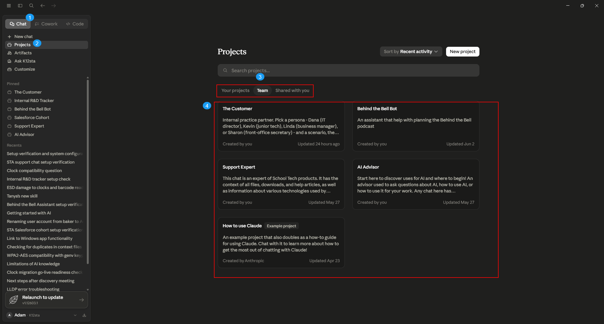

AI Advisor is a shared Claude.ai Project built for School Tech. Talk through your workflows, find out where AI could help, and learn what tools already exist or are being built. When you have an idea, it helps you frame it clearly to bring to Adam - and if you walk through a real workflow step by step, it will encourage you to document it and send it over. That documentation feeds the central AI knowledge base.
What it already knows
Your work context - who School Tech is, our products and customers, and what each person on the team does.
The AI system - which tools are live, in development, and planned, and who each one is for.
Where AI typically adds value, so you can spot good candidates in your own work.
You don't need to re-explain context every time. Just ask naturally, like you're talking to a knowledgeable colleague.
How to access it
Log in at claude.ai with your @k12sta.com email.
Find AI Advisor in your Projects list.
Start a new conversation.

Finding your projects
Chat tab (top-left): you work in Chat, not Cowork or Code.
Projects in the left sidebar: your pre-built tools live here.
the Team tab: your shared School Tech projects are under Team.
the project cards: click one (for example, AI Advisor) and start typing.
Project vs Cowork - keep them straight
A Project is a Claude.ai Project. You open it from the Chat tab (top-left, marker 1 above). Every staff tool - AI Advisor, STA Support Chat, Salesforce Cohort, Behind the Bell - is a Project you use from the Chat tab. This is what staff use day to day.
A Cowork is different: it uses the separate Cowork tab, the advanced desktop workspace for admins and power users. We deliberately say "Project" for the Chat-tab tools and "Cowork" for the Cowork-tab workspaces - they are not the same thing.
The one data rule. Never paste restricted data - student PII, HR records, financial details, or credentials. When in doubt, leave it out.
Found a problem? If a tool gives a wrong or off answer, flag it with the Agent Quality Logger so it gets reviewed and improved.
Try starting with
"Walk me through what AI tools are live right now and who they're for."
"Here's a task I do every week - where could AI save me time?"
"Help me write up this workflow clearly so I can send it to Adam."
When to use something else
Customer product issues or troubleshooting → use STA Support Chat.
Salesforce admin questions → use the School Tech Salesforce Cohort.
Anything needing live systems, files, or real-time data → AI Advisor can't reach those.
School Technology Associates · AI Advisor · Getting Started